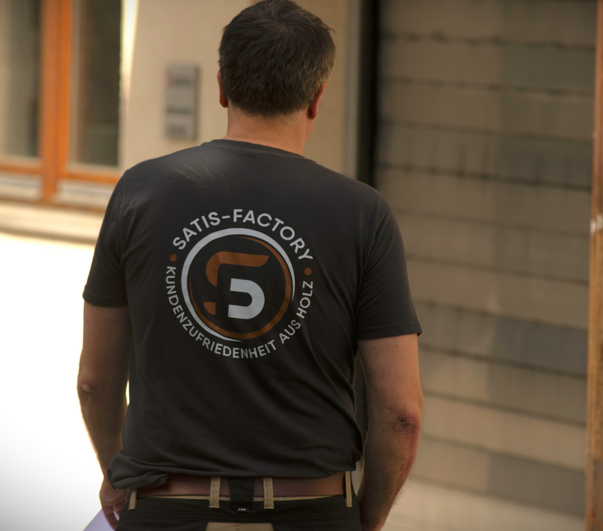
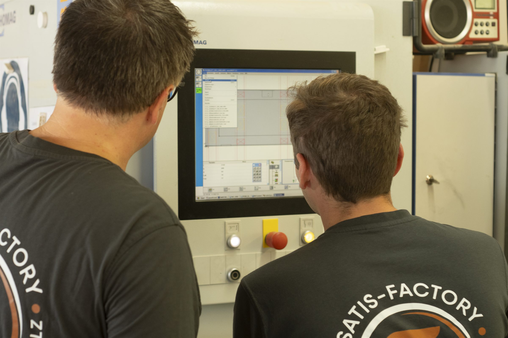
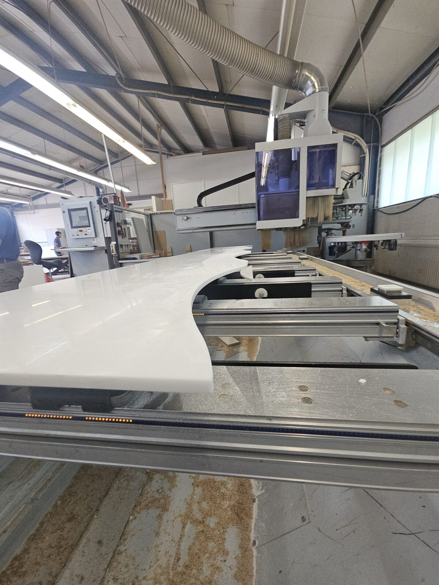

Aufmaß & technische Klärung
Du klärst Maße, Materialien und Ausführung mit Kunden und Planern.

MEISTER/IN GESUCHT · MAMMENDORF
Schreinermeister/in (m/w/d)
Arbeitsvorbereitung & Projektleitung
Du weißt, wie aus einer Zeichnung ein gutes Möbel wird. Bei uns begleitest Du den Weg dorthin.
Lernen wir uns kennen ↗Entdecke Deinen nächsten Schritt ↓01 / DEINE ROLLE
Deine Planung bleibt bei uns nicht auf dem Bildschirm. Du siehst, was daraus wird.
Du bereitest die Fertigung vor und begleitest Deine Projekte vom Aufmaß bis zur Montage. Für Objekt-, Laden- und gehobenen Innenausbau.
Die Werkstatt liegt direkt vor Ort. Wenn es etwas zu klären gibt, sprichst Du mit den Menschen, die Deine Planung umsetzen.


02 / DEINE AUFGABEN
Vom ersten Maß bis zur Montage.
Mit Überblick und einem Blick fürs Detail.
Du klärst Maße, Materialien und Ausführung mit Kunden und Planern.
Du erstellst Zeichnungen und Stücklisten und organisierst Material und Beschaffung.
Du unterstützt bei Angeboten und behältst Termine, Kosten und Qualität im Blick.
Du stimmst Dich mit dem Team ab und arbeitest bei Bedarf selbst in der Werkstatt und an der CNC mit.
03 / DEIN ARBEITSPLATZ
Abwechslungsreicher Innenausbau und Schritt für Schritt mehr Verantwortung. Erfahrene Kollegen und Kolleginnen unterstützen Dich bei der Einarbeitung.
Eigene Fertigung, großer Maschinenpark und kurze Wege zwischen Planung und Werkstatt. Raum, um fachlich weiterzukommen.
Faire Bezahlung, Prämienzahlungen, vermögenswirksame Leistungen und givve-Card. Dazu ein Deutschlandticket für Pendler/innen im öffentlichen Nahverkehr.
04 / DAS BRINGST DU MIT
Meisterabschluss und Erfahrung aus dem Berufsalltag.
Du bringst entweder mindestens drei Jahre als Geselle vor der Meisterschule oder mindestens zwei Jahre Berufserfahrung als Meister mit.
Vectorworks und interiorcad sind willkommen. Bei einem Wechsel von einem anderen CAD-System unterstützen wir Dich. CNC-Erfahrung ist gerne gesehen, aber kein Muss.

05 / DEIN NÄCHSTER SCHRITT
Du möchtest wissen, ob wir zusammenpassen?
Schreib uns kurz, was Du bisher gemacht hast und was Du suchst. Deinen Lebenslauf kannst Du direkt mitschicken. Oder ruf an, wenn Du erst noch Fragen hast.
info@satis-factory.de
Die vollständige Stellenausschreibung →